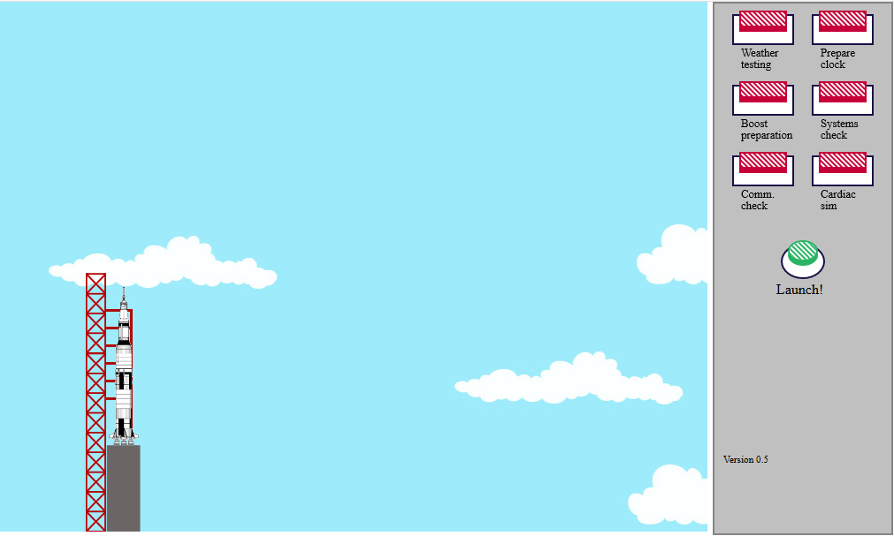

Going to the moon - Apollo 11 information
With this minigame/simulator you can relive the launch of the Apollo 11 an the landing on the moon.
Launch the rocket your self, decouple it and land the moonlander on the surface of the moon.
The simulator uses real audio fragments and authentic imagery.
Future updates:
- more detailed elaboration of the decoupling procedure in space.
- more audio when I can find these fragments
- graphical updates and more animations

Current version: 0.6
Changelog